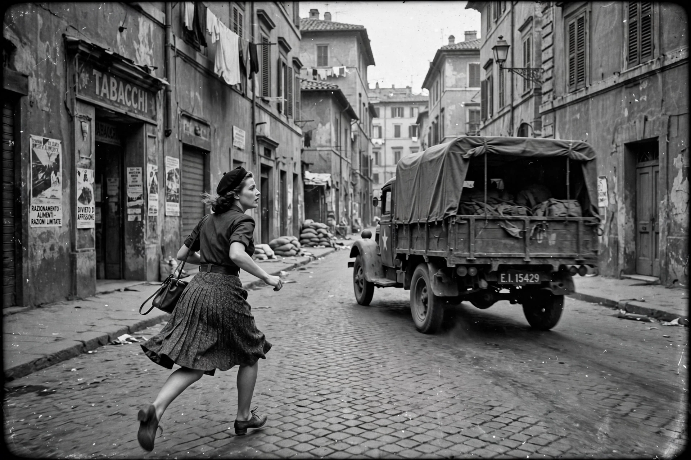

Rome, Open City (Italian: Roma città aperta), also released as Open City, is a 1945 Italian neorealist drama film directed by Roberto Rossellini and co-written by Federico Fellini and Sergio Amidei. Set during the Nazi occupation of Rome (1943–1944), it follows a Resistance leader on the run from the Gestapo, the woman who shelters him, and a priest who aids the underground. The film is widely considered the founding work of Italian neorealism and one of the greatest films ever made.

| Directed by | Roberto Rossellini |
|---|---|
| Written by | Sergio Amidei, Federico Fellini, Roberto Rossellini |
| Starring | Anna Magnani, Aldo Fabrizi |
| Release date | 27 September 1945 (Italy) |
| Running time | 103 minutes |
| Country | Italy |
| Language | Italian, German |
In occupied Rome, Communist resistance leader Luigi Manfredi, alias Giorgio Manfredi, evades the Gestapo under Major Bergmann. He is aided by the printer Francesco, Francesco's pregnant fiancée Pina, and the priest Don Pietro, who carries messages and money for the resistance. Betrayed by Manfredi's former lover Marina, the men are arrested; Pina is shot dead in the street as she runs after the truck carrying Francesco away. Manfredi dies under torture without talking, and Don Pietro is executed by firing squad before the boys of the parish, who have themselves formed a small resistance cell.
Rossellini began filming in January 1945, only months after Rome's liberation, using scavenged film stock of varying quality (which produced the film's grainy, documentary look), location shooting in real streets, and a mixture of professional actors — Anna Magnani as Pina and Aldo Fabrizi as Don Pietro — with non-professionals. The film won the Grand Prix at the 1946 Cannes Film Festival and was nominated for the Academy Award for Best Adapted Screenplay. In the United States it became a surprise popular success, running for years in New York and launching international interest in Italian cinema.
Together with Shoeshine (1946) and Bicycle Thieves (1948) by Vittorio De Sica, Rome, Open City formed the canonical core of neorealism, influencing the French New Wave and filmmakers worldwide. It consistently appears in critics' polls of the greatest films of all time.